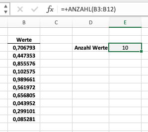
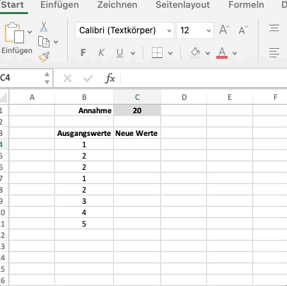
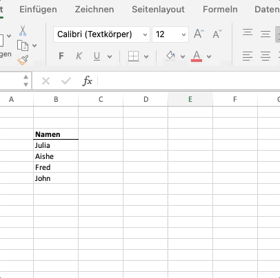
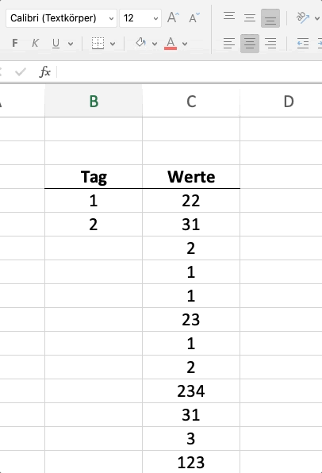

Iterationen und Funktionen
Inhalt
Iterationen und Funktionen¶
Wir haben im vorherigen Kapitel festgestellt, dass der von uns teilweise verbesserte Code immer noch sehr repetitiv ist. Dafür gab es zwei Gründe
Der Code ist repetitiv, d.h. Wiederholungen von sehr ähnlichen Dingen
Der Code ist unflexibel, d.h. bei kleinen Veränderungen der Fragestellung bereits unbrauchbar
Wir werden in diesem Kapitel zwei wichtige Coding-Konstrukte vorstellen, die uns helfen, den Code weiter zu verbessern und die angesprochenen Probleme des bisherigen Codes zu verbessern.
Wir beginnen mit dem Konstrukt der Funktionen, bevor wir uns dem Konstrukt der Iterationen widmen.
Funktionen (build-in)¶
Wir können Funktionen einsetzen, um Teile des Codes wiederverwendbar zu machen bzw. um bereits geschriebenen Code von anderen wiederzuverwenden. Das Konstrukt ist sehr mächtig und wir werden sowohl bereits implementierte Funktionen nutzen, als auch eigene Funktionen schreiben lernen.
Lassen Sie uns wieder eine Analogie aus Excel nutzen. Stellen Sie sich vor, wir haben eine Spalte mit vielen Werten und wir wollen wissen, um wieviele Werte es sich handelt, d.h. wir wollen die Anzahl an Werten bestimmen. Wir könnten diese Information z.B. benötigen, um einen Durchschnitt zu berechnen.

Natürlich könnten wir die Anzahl an Werten selber und manuell zählen (es sind 10 Werte). Diese Lösung ist aber wenig sinnvoll, da wir so einen manuellen Schritt in unser “Programm” einbauen. Besser wäre es, wenn wir die Anzahl an Werten automatisiert bestimmen. Wir könnten uns über diese eigentlich triviale Aufgabe nun Gedanken machen. Jedoch müssen wir dies nicht, da es für diese spezielle Frage bereits eine Lösung in Excel gibt. Wir können die Funktion Anzahl() nutzen, die Excel bzw. Microsoft bereits für den Anwender zur Verfügung gestellt hat. Die Funktion berechnet, wie viele Zellen in einem Bereich Zahlen enthalten.

Ein Großteil der Funktionalität von Excel geht auf die breite Palette an bereits verfügbaren Funktionen zurück.
Schauen wir uns nun das Äquivalent in Python an. Wir können die Anzahl an Elementen in z.B. einer Liste über die Funktion len ermitteln.
Beispiel
werte = [10, 12, 13, 12, 5, 4, 2] # Liste mit Werten
len(werte) # Gibt die Anzahl an Elementen in der Liste "werte" zurück
7
Zum Aufrufen einer Funktion benötigen wir in Python
den Namen der Funktion
die benötigten Parameter für die Funktion
Der Name der Funktion lautet len. Die Funktion wird dann aber erst ausgeführt (bzw. aufgerufen), in dem der Funktion die benötigten Parameter übergeben werden. Bei der Funktion len ist dies z.B. eine Liste, deren Anzahl an Elementen bestimmt werden soll.
Wenn wir eine bestehende Funktion nutzen wollen, schreiben wir also immer:
<funktionsname>(<parameter>, ...)
Die “...” stehen hier für weitere Parameter, die ggf. für eine Funktion benötigt werden. Das Vorgehen ist also prinzipiell sehr ähnlich zum Vorgehen bei Excel.
Hilfe zu Funktionen
Wir können zu nahezu allen Funktionen Hilfe nachschlagen.
Dies machen wir entweder, in dem wir ein “?” hinter die Funktion schreiben. Wenn Sie z.B. wissen wollen, was die Funktion len tut, dann schreiben Sie in eine Code-Zelle len? und Ihnen werden Erläuterungen dazu angezeigt.
In einem Jupyter Notebook können Sie alternativ auch den Funktionsnamen + “()” und dann einmal shift + tab drücken.
Darüber hinaus können Sie sich noch die Dokumentation von Funktionen anschauen, die Sie meist online finden werden.
In Python gibt es viele Funktionen, die wir nutzen können, um uns eigenen Programmieraufwand zu sparen. Die vollständige Liste aller sog. build-in Funktionen kann hier nachgeschlagen werden. Hierbei handelt es sich jedoch nur um Funktionen, die bereits in Python enthalten sind. Darüber hinaus können wir andere Bibliotheken installieren, um das Spektrum signifikant zu erweitern; dies werden wir in den nächsten Kapiteln auch tun.
Iterationen¶
Das Wiederholen von identischen oder sehr ähnlichen Code-Ausschnitten ist aufwändig und fehleranfällig und sollte deshalb nicht vom Menschen, sondern vom Computer übernommen werden.
Auch an dieser Stelle wollen wir uns wieder einer Analogie aus Excel bedienen. Die Stärke von Excel ist unter anderem dadurch begründet, dass wir Operationen vielfach durchführen können, ohne diese mehrfach sexplizit formuliert zu haben. Wir können stattdessen einmal formulierte Operationen “nach unten” oder “zur Seite ziehen”. Dadurch kann eine Operation automatisch für eine andere Zelle angewandt werden.
Hier ein Beispiel in Excel, die eine Formel für viele Zellen anwendet.

Das Beispiel zeigt, dass wir dadurch viel manuellen Aufwand, aber auch viele potenzielle Fehlerquellen vermeiden.
Auch viele Programmiersprachen haben deshalb Konstrukte, um diese Wiederholungen zu vermeiden. Wir werden uns nun zwei Konstrukten in Python widmen:
For-Loops
List comprehensions
For-Loops¶
Mit einer For-Loop können wir (iterierbare) Datentypen durchlaufen. Schauen wir uns ein Beispiel an, um zu verdeutlichen, was damit gemeint ist.
Beispiel
liste_namen = ["Julia", "Aishe", "Fred", "John"]
for name in liste_namen:
print("Hallo", name)
Hallo Julia
Hallo Aishe
Hallo Fred
Hallo John
Das Äquivalent in Excel würde wiefolgt aussehen:

Im obigen Python-Beispiel definieren wir eine Variabel liste_namen. Diese ist vom Datentyp list. Listen sind in Python immer iterierbar, d.h. wir können diese mittels einer for-loop durchlaufen. Wir tun dies in dem wir schreiben
for <name> in <liste_name>:
Dies zeigt Python an, dass wir die Liste liste_namen durchlaufen wollen und für jedes Element - wir bezeichnen es hier als name - etwas tun möchten. Unter dieser Definition schreiben wir dann - eingerückt mit 4 Leerzeichen bzw. tab - , was wir konkret tun möchten. In unserem Falle wollen wir nur etwas ausgeben lassen. Hierfür nutzen wir eine der build-in Funktionen (print). Wenn wir Zwischenergebnisse innerhalb einer for-loop nicht in Variabeln “abspeichern”, sondern nur anzeigen lassen wollen, müssen wir immer die (build-in) Funktion print nutzen.
Jede For-Schleife in Python hat also immer die folgende grundsätzliche Strukur:
>>> for <element> in <objekt>:
mach irgendetwas
Hierbei muss objekt iterierbar sein. element können wir uns als eine Art Platzhalter für das jeweilige Element vorstellen. Wir können hier auch jeden anderen Namen wählen. Wir sollten uns jedoch angewöhnen sinnvolle und beschreibende Namen zu wählen.
Lassen Sie uns unser neu gewonnenes Wissen kombinieren und folgende Aufgabe in Python lösen.
Aufgabe:
Wir haben eine Liste mit Namen und wollen bestimmen, wieviel Buchstaben jeder Name hat.
Lösung
Wir können dafür die Liste der Namen durchlaufen und für jedes Element der Liste, die Länge des Namen mit der Funktion len bestimmen.
namen = ["Julia", "Aishe", "Fred", "Schwerthelm", "John", "Manuela"]
for name in namen:
n_buchstaben = len(name) # Bestimme Anzahl an Element in Namen
print(name, n_buchstaben) # Gib Anzahl aus
Julia 5
Aishe 5
Fred 4
Schwerthelm 11
John 4
Manuela 7
Alternativ könnten wir die Länge der Buchstaben auch in einer neuen Liste speichern - dies ist immer dann sinnvoll, wenn wir die Zwischenergebnisse später in unserem Code noch benötigen.
Beispiel
Wir erstellen dafür eine leere Liste (“[]”), die wir dann mit jeder Iteration mit der Anzahl an Buchstaben befüllen. Dafür benutzen wir die “Funktion” .append, die der Datentyp list bereitstellt.
namen = ["Julia", "Aishe", "Fred", "Schwerthelm", "John", "Manuela"]
anzahl_buchstaben = [] # Leere Liste
for name in namen:
n_buchstaben = len(name) # Bestimme Anzahl an Element in Namen
anzahl_buchstaben.append(n_buchstaben) #
# Ausgabe der neuen Liste
anzahl_buchstaben
[5, 5, 4, 11, 4, 7]
enumerate
Wir können mittels der (build-in) Funktion enumerate zusätzlich zum einzelnen Element der Liste auch die Position des Elements in der Liste ausgeben lassen. Wir generieren dadurch eine Art Zähler.
zahlen = [12, 14, 230]
for i, zahl in enumerate(zahlen):
print(i, zahl)
>>> 0 12
>>> 1 14
>>> 2 230
List comprehension¶
Eine Besonderheit in Python sind die sog. list comprehensions. Mit diesen können die Ergebnisse einer for-loop direkt in einer neuen Liste abgespeichert werden.1
Wir können das obige Beispiel mit dem Konstrukt der list comprehension einfacher und kompakter darstellen.
namen = ["Julia", "Aishe", "Fred", "Schwerthelm", "John", "Manuela"]
anzahl_buchstaben = [len(name) for name in namen]
# Ausgabe der neuen Liste
anzahl_buchstaben
[5, 5, 4, 11, 4, 7]
>>> [mach irgendetwas for <element> in <objekt>]
In Python werden - wenn möglich - typischerweise list comprehension bevorzugt, da dies den Code insgesamt übersichtlicher und lesbarer macht.
Nützliche Funktionen¶
An dieser Stelle wollen wir einige ausgewählte Funktionen vorstellen, von denen wir glauben, dass sie gerade zu Anfang besonders nützlich sind. Wir werden jeweils kurz darauf eingehen, weshalb diese nützlich sind.
print
Die Funktion akzeptiert eine beliebige Anzahl an Parametern und gibt diese in Form von Text aus. Die Funktion ist sehr nützlich, da wir z.B. auch Zwischenergebnisse innerhalb einer Code-Zelle anzeigen lassen können.
Beispiel:
a = 3
b = 4 + a
print("b =", b)
c = a + b
c
b = 7
10
len
Die Funktion gibt die Länge einer Liste (und vieler anderer Datentypen) an. Wir benötigen diese Funktion sehr häufig, da wir die Information, wie viele Elemente ein Objekt hat sehr häufig benötigen.
Beispiel:
a = [1,2,3]
b = "Dies ist ein langer Satz!"
len(a), len(b)
(3, 25)
range
Die Funktion gibt eine Zahlensequenz zurück, die standardmäßig bei 0 beginnt, sich um jeweils 1 erhöht und bei einer angegebenen Zahl endet.
Nun fragen Sie sich vielleicht, weshalb Sie eine solche Funktion benötigen. Diese Frage ist natürlich abhängig vom spezifischen Kontext bzw. Problem, welches Sie programmieren. Jedoch gibt es z.B. in Excel einen Anwendungsfall, auf denen viele von Ihnen schon mal gestoßen sind: Sie wollen z.B. einen Index erstellen. In Excel wird dies z.B. oft wie dargestellt gemacht.

In Python können Sie dies mit der Funktion range erreichen.
werte = [22,31, 2, 1, 1, 23, 1, 2, 234, 31, 3, 123]
n = len(werte)
index = range(n)
index, list(index)
(range(0, 12), [0, 1, 2, 3, 4, 5, 6, 7, 8, 9, 10, 11])
Der Startpunkt, der Zählschritt sowie der Endpunkt können dabei jedoch auch explizit vorgegeben und so geändert werden. Im unteren Beispiel startet die Zahlensequenz bei 10, erhöht sich mit jedem Schritt um 2 und endet bei 19 (d.h. der gewählte Endpunkt ist nicht mit enthalten).
x = range(10, 20, 2)
[el for el in x]
[10, 12, 14, 16, 18]
enumerate
Die Funktion fügt einem iterierbaren Objekt einen Zähler hinzu. Wir können diese Funktion immer dann nutzen, wenn wir einer For-Loop einen Zählern hinzufügen möchten.
Beispiel:
namen = ["Horst", "Igor", "Gerd", "Hannelore"]
for i, name in enumerate(namen):
print(i, name)
0 Horst
1 Igor
2 Gerd
3 Hannelore
zip
Mit der Funktion kann ich zwei (oder mehr) iterierbare Datentypen (siehe Sektion Iterationen) parallel iterieren. Dieses Konstrukt wird häufig in List-Comprehensions bzw. For-Loops genutzt.
Beispiel:
liste1 = [1,2,3,4,5]
liste2 = [3,4,5,6,7]
[a + b for a, b in zip(liste1, liste2)]
[4, 6, 8, 10, 12]
Optimierung des Beispiels¶
Wir haben nun das nötige Wissen, um unser Ausgangsbeispiel signifikant zu optimieren. Schauen wir uns dafür nochmal einen Ausschnitt unseres Codes an.
# Annahmen im Base Case
i = 0.04
cash_flows = [-10000, 5000, 4000, 3000]
KW = cash_flows[0] + cash_flows[1]/(1+i)**1 + cash_flows[2]/(1+i)**2 + cash_flows[3]/(1+i)**3
KW
1172.9062357760577
Wie können wir den Code nun optimieren? Schauen wir uns den Code genauer an, dann stellen wir fest, dass
wir die Berechnung einzelnen Barwerte insgesamt 4 Mal wiederholen, d.h. wir schreiben zu jedem Zeitpunkt $\frac{CF_t}{(1+i)^t}.
wir summieren die berechneten Barwerte auf, in dem wir jeweils “
+” schreiben.
Wir können den Code nun verbessern, in dem wir für die Berechnung der einzelnen Barwerte eine for-loop bzw. eine list comprehension nutzen. Dadurch vermeiden wir repetitiven Code. Die Addition der einzelnen Barwerte können wir dann über die Funktion sum durchführen. Dadurch machen wir unseren Code flexibler z.B. für den Fall, wenn ein Projekt weniger oder mehr Cashflows beinhaltet.
Hier der Code in zwei einzelnen Schritten
Berechnung der Barwerte
Summierung der Barwerte
# Annahmen im Base Case
i = 0.04
cash_flows = [-10000, 5000, 4000, 3000]
# Berechnung der Barwerte und speichern in neuer Liste
barwerte = [cf/(1+i)**t for t, cf in enumerate(cash_flows)]
# Berechnung der Summe der Barwerte
KW = sum(barwerte)
KW
1172.9062357760577
Wir können sogar noch einen Schritt weitergehen und beide Berechnung zusammenführen.
KW = sum([cf/(1+i)**t for t, cf in enumerate(cash_flows)])
KW
1172.9062357760577
Die optimierte Lösung ist sehr viel kompakter und funktioniert auch für jede beliebige andere Anzahl an Cashflows, d.h. wir haben einen Lösungsansatz gefunden, der für eine beliebige Anzahl an Cash Flows und einen anzugebenden Zinssatz den Kapitalwert berechnet.
Definition von eigenen Funktionen¶
Wir haben uns bereits einige Funktionen angeschaut, die von Python bereitgestellt werden. Lassen Sie uns nun damit beschäftigen, wie wir eigene Funktionen schreiben. Bevor wir dies tun wollen wir jedoch kurz darauf eingehen, weshalb dies sinnvoll ist. Aus unserer Sicht gibt es zwei gute Gründe, weshalb wir eigene Funktionen schreiben sollten. Zum einen macht dies den Code lesbarer und zum anderen führt dies zu weniger repetitivem und damit kompakteren Code.
[HINWEIS: WARUM REITEN WIR AUF LESBARKEIT VON CODE RUM -> unser zukunftiges Ich wird Code oft nicht mehr verstehen und kann diesen deshalb nicht anpassen]
Nehmen wir unser Beispiel der Bewertung eines Projektes. Stellen wir uns vor, dass wir nun für alle drei Szenarien den Kapitalwert ermitteln wollen.2
Der Code dafür könnte wiefolgt aussehen:
# Annahmen
i = 0.04
cf_szenario = {"base": [-10000, 5000, 4000, 3000],
"high": [-10000, 6000, 5000, 4000],
"low": [-10000, 4000, 3000, 1000],}
# Kapitalwert Szenario 1
cash_flows = cf_szenario["base"]
KW_base = sum([cf/(1+i)**t for t, cf in enumerate(cash_flows)])
# Kapitalwert Szenario 2
cash_flows = cf_szenario["high"]
KW_high = sum([cf/(1+i)**t for t, cf in enumerate(cash_flows)])
# Kapitalwert Szenario 3
cash_flows = cf_szenario["low"]
KW_low = sum([cf/(1+i)**t for t, cf in enumerate(cash_flows)])
Wir stellen fest, dass der Code wieder sehr repetitiv ist. Wir könnten die jeweiligen Berechnungen deshalb z.B. in eine for-loop verlagen. Das sähe dann so aus:
szenarien = ["base", "high", "low"]
ergebnisse = []
for szenario in szenarien:
cash_flows = cf_szenario[szenario]
KW = sum([cf/(1+i)**t for t, cf in enumerate(cash_flows)])
ergebnisse.append(KW)
ergebnisse
[1172.9062357760577, 3947.9972690031846, -2491.1811561219856]
Der Code sieht schon kompakter aus. Was aber, wenn wir weitere Projekte bewerten wollen? Wir müssten diesen Code mehrmals nutzen, um die jeweiligen Projekte zu bewerten. Genau für ein solches Szenario bietet sich an, die Funktionalität des Codes in eine eigene Funktion auszulagern. Wir müssten dann immer nur die Funktion aufrufen und nicht die vielen Zeilen Code wiederholen.
Schauen wir uns an, wie wir Funktionen in Python schreiben. In Python ist jede Funktion wie folgt aufgebaut:
>>> def funcname(parameter, ...):
mach irgendetwas
return ergebnis
Jede Funktion beginnt mit dem Wort “def” und einem Namen für die Funktion. Diesen können wir frei wählen. Der Name sollte beschreiben, was die Funktion tut. Darüber hinaus geben wir an, welche Informationen bzw. welche parameter die Funktion benötigt. Im inneren der Funktion definieren wir dann, was die Funktion tut. Das Ergebnis der Funktion wird dann via return ausgegeben.
Sobald eine Funktion definiert ist, kann diese überall im Programm genutzt werden, indem diese über “()” aufgerufen wird.
Schauen wir uns zwei einfache Beispiele an:
# Definition der Funktion "begrüßung", diese hat benötigt keinen Parameter
def begrüßung():
return "Herzlich Willkommen!"
begrüßung()
'Herzlich Willkommen!'
# Definition der Funktion "addition"; diese benötigt zwei Parameter
def addition(zahl1, zahl2):
summe = zahl1 + zahl2
return summe
# Ausführen der Funktion "addition"
addition(3,55)
58
Es ist sehr einfach, in Python eigene Funktionen zu definieren. Wir sollten deshalb auch - wenn es sinnvoll erscheint - davon gebrauch machen. Schauen wir uns an, wie wir die Kapitalwertberechnung in eine Funktion “auslagern” können.
Wir müssen uns Gedanken machen zu verschiedenen Dingen:
Wie soll die Funktion heißen (Funktionsname)
Welche Informationen benötigt die Funktion (Funktionsparameter)
Welche Berechnungen soll die Funktion im inneren Durchführen (Funktionsinhalt)
Was soll die Funktion ausgeben (Funktionsoutput)
Für 1.: sollten wir einen Namen wählen, der beschreibt, was die Funktion macht. Wir wählen also z.B. berechne_kapitalwert. An dieser Stelle der Hinweis, dass es sehr üblich ist in englischer Sprache zu coden, d.h. für Variabeln und Funktionen englische Begriffe zu wählen.
Für 2.: wir benötigen Cash Flows und Zinssatz, um die Berechnungen durchzuführen.
Für 3: den Code zur Berechnung des Kapitalwertes haben wir bereits geschrieben. Dies ist auch ein sehr übliches Vorgehen. Wir schreiben Code, probieren aus etc. Sobald wir merken, dass der Code funktioniert und ausgelagert werden könnte, beginnen wir diesen in Funktionen auszulagern.
Für 4: die Funktion sollten den Kapitalwert als Ergebnis ausgeben.
Der Code für unsere erste eigene Funktion könnnte also z.B. so aussehen:
def berechne_kapitalwert(cashflows, zins):
KW = sum([cf/(1+zins)**t for t, cf in enumerate(cashflows)])
return KW
Wir können unsere Funktion nun testen, in dem wir für cashflows und zins Werte einsetzen und die Funktion aufrufen. Wir können dies auf verschiedene Weise machen. Hier ein paar Beispiele, die funktionieren.
Beispiel 1: ohne vorherige Definition der Input-Variablen
berechne_kapitalwert([-100, 50,50], 0.3)
-31.952662721893496
Beispiel 2: mit vorherige Definition der Input-Variablen
Wichtig: die Namen der Variablen müssen nicht mit den Parameternamen übereinstimmen
cash = [-100, 50, 50]
r = 0.3
berechne_kapitalwert(cash, r)
-31.952662721893496
Beispiel 3: mit Nennung der Parameter
In den vorherigen Beispielen haben wir die Parameternamen nicht genannt, sondern unsere Daten nur in korrekter Reihenfolge eingegeben: 1. cashflows, 2. zins.
Wir können jedoch alternativ auch die Parameternamen angeben (sog. Keyword Argument).
cash = [-100, 50, 50]
r = 0.3
berechne_kapitalwert(cashflows=cash, zins=r)
-31.952662721893496
Bei diesem Vorgehen ist die Reihenfolger der Parameter dann unerheblich.
berechne_kapitalwert(zins=r, cashflows=cash)
-31.952662721893496
Schauen wir uns nun an, was der Vorteil der Auslagerung von Code-Teilen in Funktionen konkret ist. Wir werden dazu unsere drei Szenarien (siehe hier)
szenarien = ["base", "high", "low"]
ergebnisse = [berechne_kapitalwert(cf_szenario[szenario], i ) for szenario in szenarien]
ergebnisse
[1172.9062357760577, 3947.9972690031846, -2491.1811561219856]
Der Code ist wesentlich kompakter, weil wir das Kernstück - die Berechnung des Kapitalwertes - ausgelagert haben in eine Funktion. Auch ist der Code viel einfacher zu lesen. Wir sehen auf den ersten Blick, dass wr für verschiedene Szenarien die Funktion berechne_kapitalwert aufrufen. Was diese tut ist durch den gewählten Namen der Funktion fast intuitiv klar.
Iterieren von Dictionaries
Alternativ könnten wir das dictionary mit den Cashflow-Szenarien auch direkt in der list comprehension ansprechen. Dies ist möglich, weil ein dictionary wie eine Liste auch iterierbar ist. So können wir die drei Schlüssel (key) via dict.keys() und die Werte via dict.values() abrufen. Ersteres würde die Schlüssel “base”, “high” und “low” liefern. Letzteres die entsprechenden Cashflows zu den Szenarien, d.h. “[-10000, 5000, 4000, 3000]”, “[-10000, 6000, 5000, 4000]” und “[-10000, 4000, 3000, 1000]”.
ergebnisse = [berechne_kapitalwert(cash, i ) for cash in cf_szenario.values()]
Zusammenfassung und Ausblick¶
Wir haben unser Eingangsbeispiel signifikant verbessert, in dem wir uns zwei wichtige Konstrukte der Programmierung bzw. in Python angeschaut haben.
Funktionen: sind eine sinnvolle Möglichkeit um wiederkehrenden Code auszulagern und wiederverwendbar zu machen. Wir können sowohl bereits existierende Funktionen nutzen, die andere für uns zur Verfügung stellen, als auch eigene Funktionen definieren.
Iterationen: wir haben das Konstrukt der
for-loopsund derlist comprehensionkennengelernt. Wir sollten dieses Konstrukt immer dann anwenden, wenn wir Code repetitiv anwenden.
Mit dem bisher vorgestellten Konstrukten können Sie bereits sehr mächtige Programme schreiben. Natürlich bedarf es einem gewissen Maß an Übung, um die Syntax zu lernen, aber auch um die Anwendungsfälle zu identifizieren. Gehen Sie deshalb die Übungen dieses Kapitels sorgfältig durch.
Im nächsten Kapitel werden wir uns mit weiteren wichtigen Konstrukten auseinandersetzen.